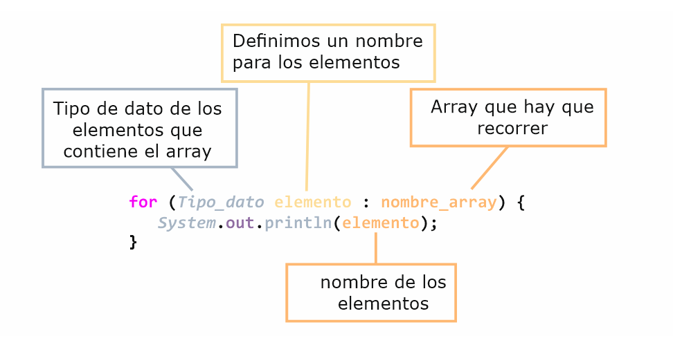
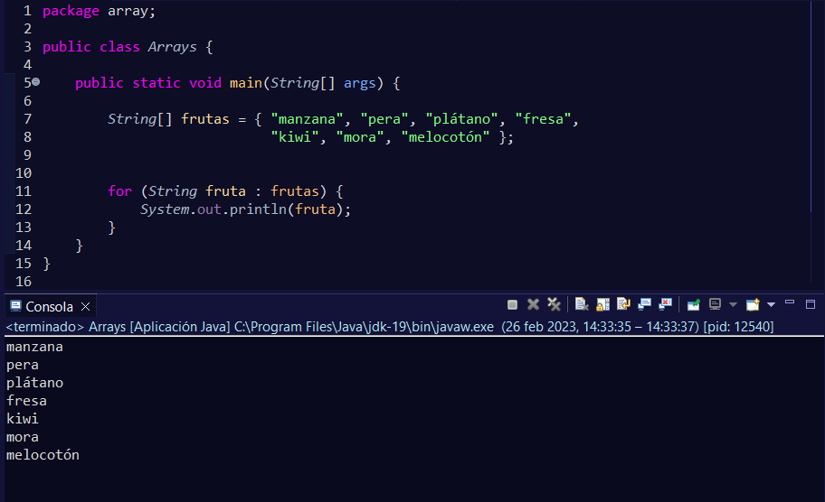
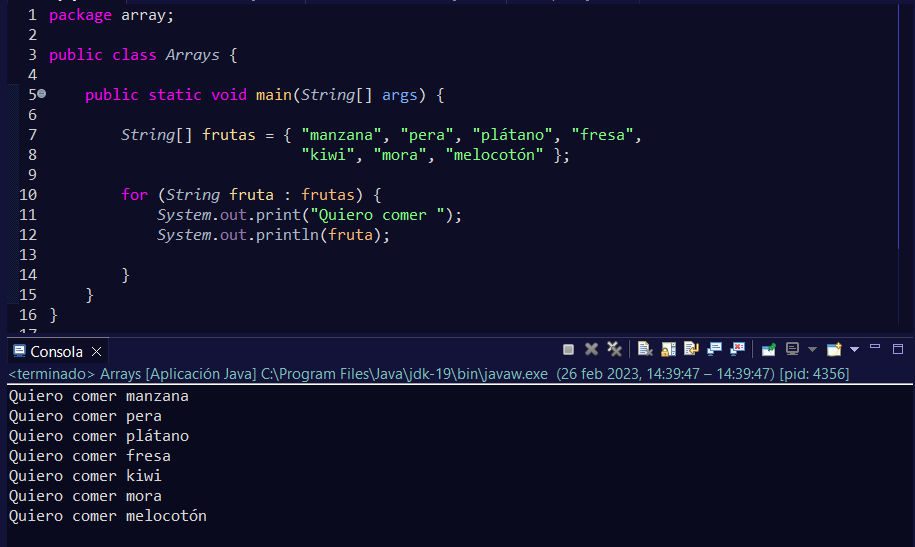

Además de los bucles vistos anteriormente, disponemos de otro bucle, es el bucle for each. Aunque en Java solamente aparece for para definirlo, en otros lenguajes se escribe for each, de ahí que se le asigne este nombre.
Este bucle tiene una manera simplificada para recorrer arrays o colecciones.
Donde aparece el nombre de los elementos, se podría decir que es similar nombre_array[i] en un bucle for.
Vamos a ver un ejemplo con código que así será más fácil de comprender:
Este tipo de bucle no solo sirve para recorrer e imprimir los elementos del array, sino que se podrían introducir otras sentencias.
